class: center, middle, inverse, title-slide # The Tuna Chronicles ## AKA: What we’ve been trying to do for a year ### Kat Millage ### 2018/02/21 --- background-image: url("./img/title-background-2.jpg") class: title-slide-light <p><h1>The Tuna Chronicles</h1></p> <p><small>Kat Millage, Matthew Burgess, Daniel Ovando, Lennon Thomas, Laura Lea Rubino, Christopher Costello</small> <br> <br> <sub><sup><i>SFG Lab Meeting, February 21, 2018</small></sub></sup></i></p> <div id="title-footer"> </div> --- class: dark, middle # The Beginning <div id="logo-footer-white"></div> --- # Background - First major project for TNC's Tuna Program .pull-center[ 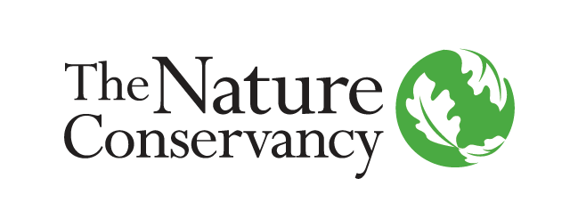 ] - Pacific Tuna Skunkworks meeting in October 2015 - Project Objectives set in May 2016 <div id="logo-footer-black"></div> --- class: dark, middle ### To ensure that Pacific tuna fisheries chart a path towards sustainable and economically sound management of tuna catch and bycatch, supporting both the long-term viability of the fisheries and fisher livelihoods. <div id="logo-footer-white"></div> --- ### Western and Central Pacific Ocean (WCPO) 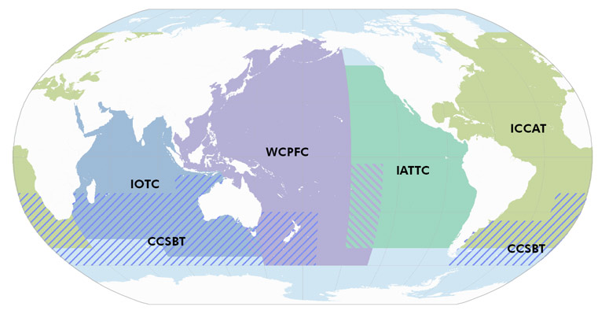 - Western & Central Pacific Fisheries Commission (WCPFC) - Secretariat of the Pacific Community (SPC) <div id="logo-footer-black"></div> --- # All The Tuna .pull-left[ ALB 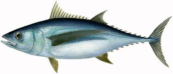 BET 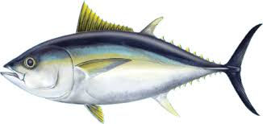 ] .pull-right[ SKJ 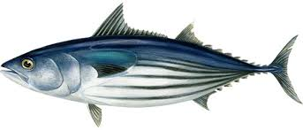 YFT 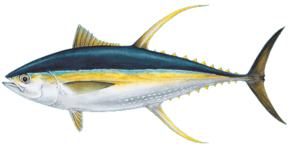 ] <div id="logo-footer-black"></div> --- # Who Goes There 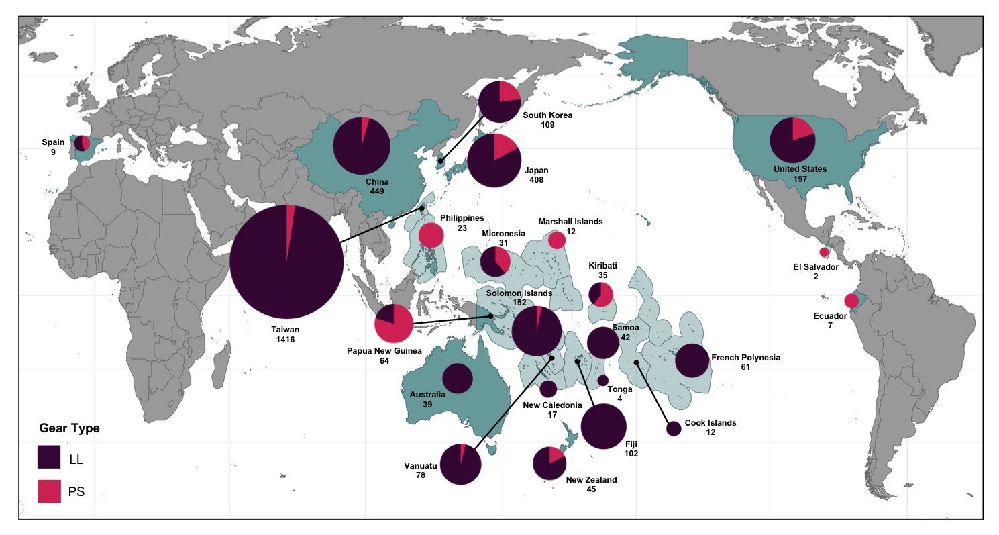 - 20+ countries - 4 main gear types: Longline, pole-and-line, purse seine, and troll <div id="logo-footer-black"></div> --- ### Parties to the Nauru Agreement (PNA) 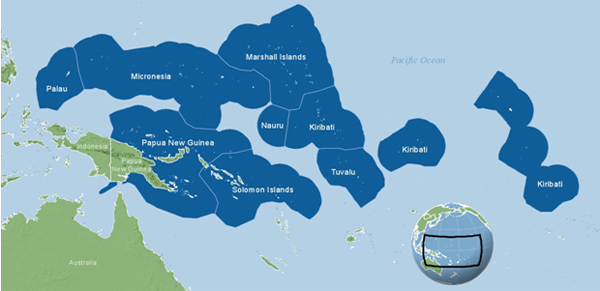 - Federated States of Micronesia, Kiribati, the Marshall Islands, Nauru, Palau, Papua New Guinea, Solomon Islands and Tuvalu - Control 50% of the global supply of skipjack tuna <div id="logo-footer-black"></div> --- # Management Challenges .pull-left[ 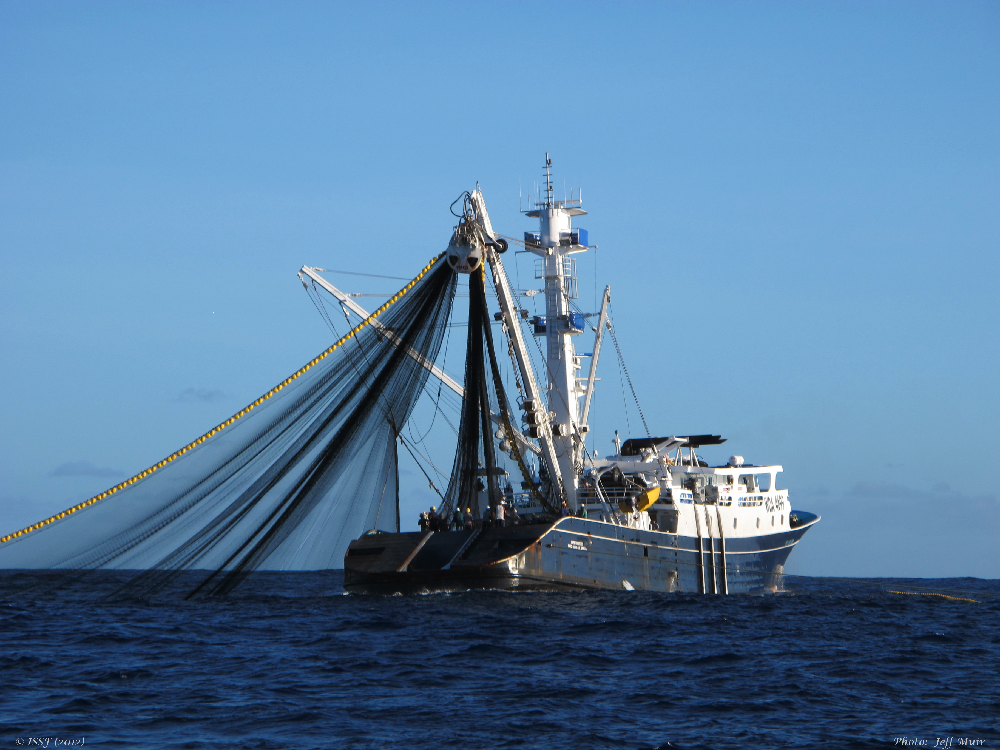 ] .pull-right[ 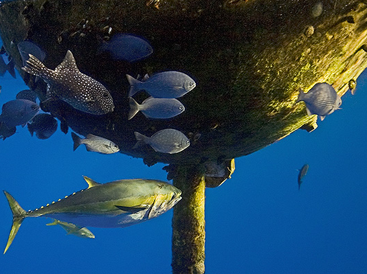 ] <div id="logo-footer-black"></div> --- # Overfishing .pull-left[ BET (Harley et al. 2014) 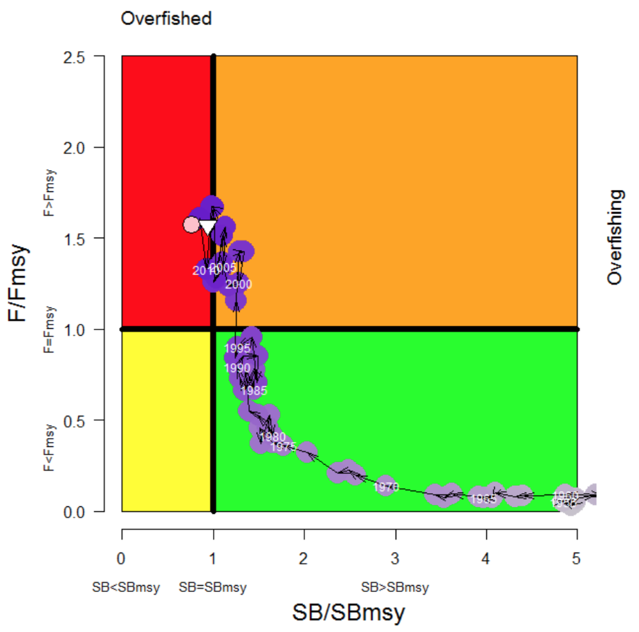 ] .pull-right[ YFT (Davies et al. 2014) 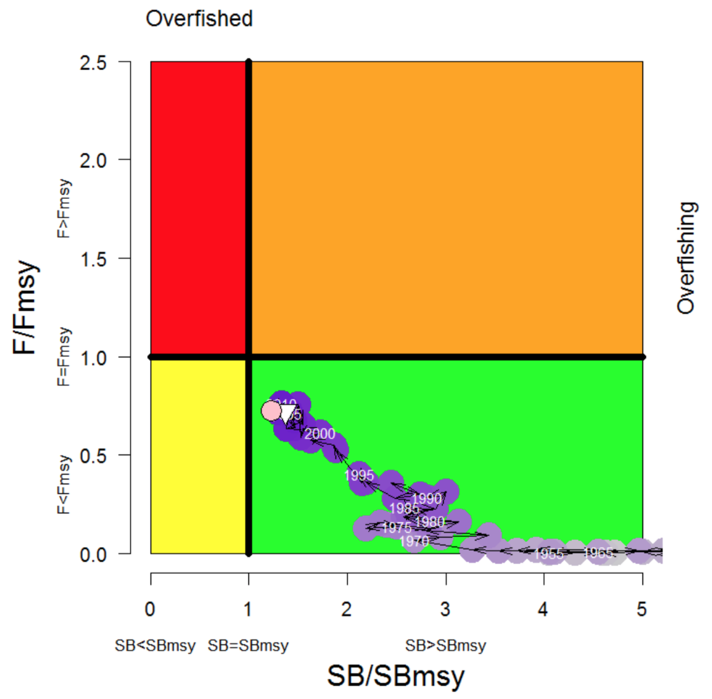 ] <div id="logo-footer-black"></div> --- class: dark, middle # The Process <div id="logo-footer-white"></div> --- # Project Objective(s) <div id="logo-footer-black"></div> Conduct a full bio-economic evaluation of alternative scenarios for the institutional structure of the tuna fisheries in the Western and Central Pacific Ocean with bycatch reduction as a primary goal. -- - Status quo - FAD taxes - Transferable effort quotas - Transferable catch quotas - Transferable relative quotas --- class: center 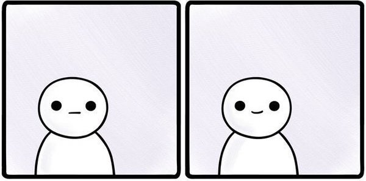 <div id="logo-footer-black"></div> -- 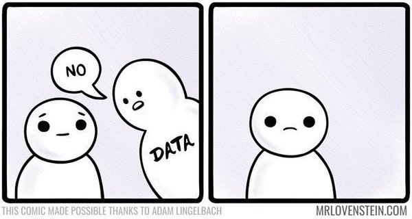 --- # Project Objective(s) <div id="logo-footer-black"></div> ~~Conduct a full bio-economic evaluation of alternative scenarios for the institutional structure of the tuna fisheries in the Western and Central Pacific Ocean with bycatch reduction as a primary goal.~~ <br> -- Conduct a bio-economic evaluation of alternative policy scenarios for a multi-species and multi-fleet fishery that vaguely resembles the WCPO with bycatch reduction as a primary goal. --- # What Overfishing? .pull-left[ BET (Harley et al. 2014) ] .pull-right[ BET (McKechnie et al. 2017) 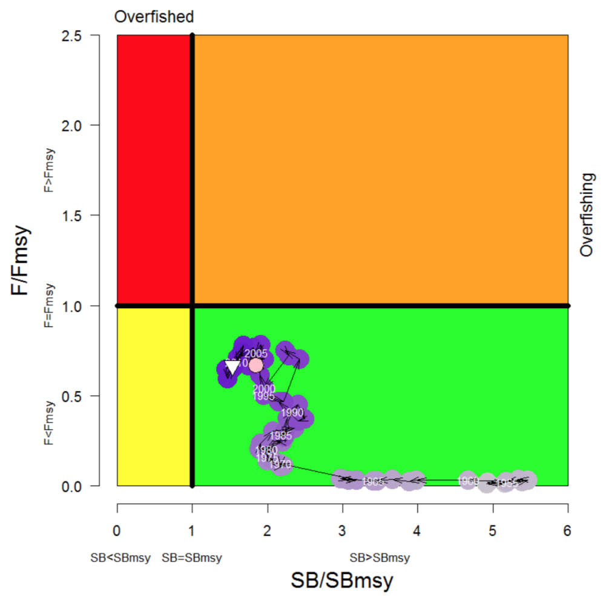 ] <div id="logo-footer-black"></div> --- # Project Objective(s) ~~Conduct a full bio-economic evaluation of alternative scenarios for the institutional structure of the tuna fisheries in the Western and Central Pacific Ocean with bycatch reduction as a primary goal.~~ <br> ~~Conduct a bio-economic evaluation of alternative policy scenarios for a multi-species and multi-fleet fishery that vaguely resembles the WCPO with bycatch reduction as a primary goal.~~ <div id="logo-footer-black"></div> <br> -- Derive the theoretical economic advantage of catch-based management instruments over effort-based management instruments. --- class: dark, middle # The Final Hour <div id="logo-footer-white"></div> --- # Theory <div id="logo-footer-black"></div> **Overfishing:** Vessels do not adequately account for the externalities caused by their catches depleting fish stocks -- **Fishery Management Tool:** Limit short-term catches in service to long-term ecological, economic, and social objectives - Can be accomplished more efficiently with catch-based management instruments --- # Theory: C vs. E <div id="logo-footer-black"></div> `\(Externalities \propto catches\)` -- * Unless all vessels have the same CPUE, difficult to offset with a `\(single fee \propto effort\)` --- class: center 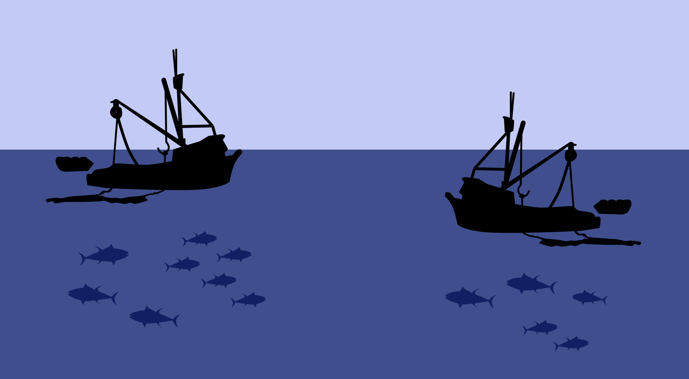 .pull-left[ **Vessel #1**<br> Catch/day = 1 mt<br> Profit/day = $20K<br> Profit/catch = $20/kg ] .pull-right[ **Vessel #2**<br> Catch/day = 0.5 mt<br> Profit/day = $15K<br> Profit/catch = $30/kg ] <div id="logo-footer-black"></div> --- # Theory: C vs. E <div id="logo-footer-black"></div> * The "Wedge" (aka the theoretical advantage of catch-based instruments relative to effort-based instruments), should depend on two factors: 1. Size of costs from depleting stock in the future ("externalities") relative to benefits of catch now 2. Degree to which effort-based instruments capture these costs ("externalities") --- ## Size of the Wedge: Theoretical To measure the size of the externalities relative to the benefits... `\(Z_j\)` : Tax/Revenue - Ratio between the price that a vessel would pay per unit effort under the best catch-based policy, and the revenue it would receive under the best catch-based policy `$$Z_j = \frac{\lambda_{cj}}{R_{cj}}$$` <div id="logo-footer-black"></div> --- ## Size of the Wedge: Theoretical To measure the degree to which an effort-based policy can capture capture the externality costs... `\(\epsilon_j\)` : Effort tax/Catch tax - Proportional difference between the price that a vessel pays per unit effort under the best effort-based policy, compared to the best catch-based policy `$$\epsilon_j = 1 - \frac{\lambda_e}{\lambda_{cj}}$$` <div id="logo-footer-black"></div> --- ## Size of the Wedge: Theoretical `$$W = \frac{\sum_{j=1}^{J}\epsilon_{j}^2 Z_{j}^2 \omega_{j}}{\sum_{j=1}^{J}(1-Z_{j})^2 \omega_j}$$` - Note the weighted averages of square terms! - Intuition is that prices of catch and effort quotas/taxes each represent/measure marginal benefits or costs - Since the wedge compares total benefits or costs --> higher dimension <div id="logo-footer-black"></div> -- ### Both values generally less than 1, wedge will be quite small (<10%) or quite large (>50%)! --- ## Size of the Wedge: Theoretical .pull-center[ 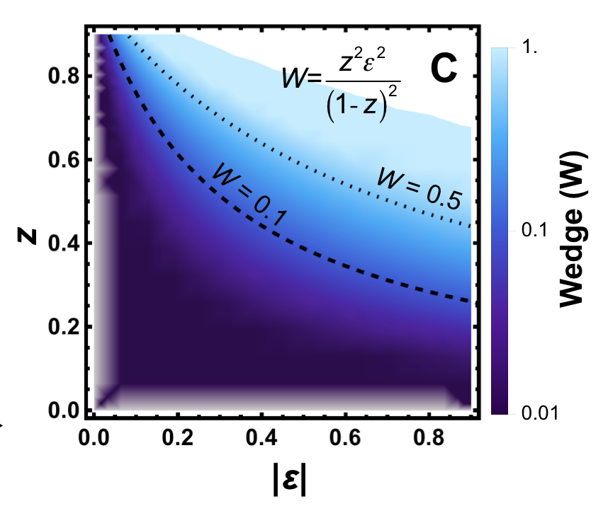 ] <div id="logo-footer-black"></div> --- ## Size of the Wedge: Data Currently an effort-based policy in place... Can approximate `\(Z\)`, `\(\epsilon\)`, and `\(W\)` from data 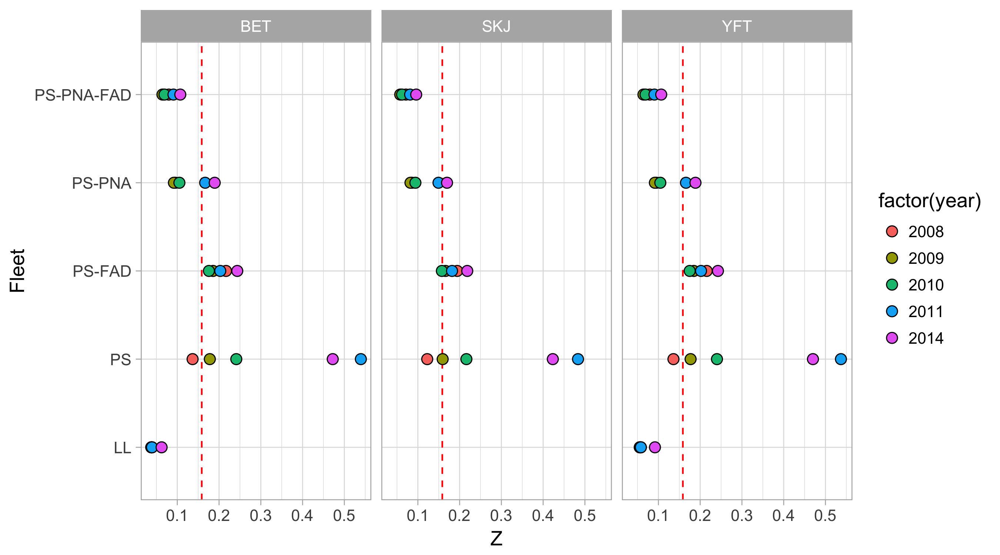 <div id="logo-footer-black"></div> --- ## Size of the Wedge: Data Currently an effort-based policy in place... Can approximate `\(Z\)`, `\(\epsilon\)`, and `\(W\)` from data 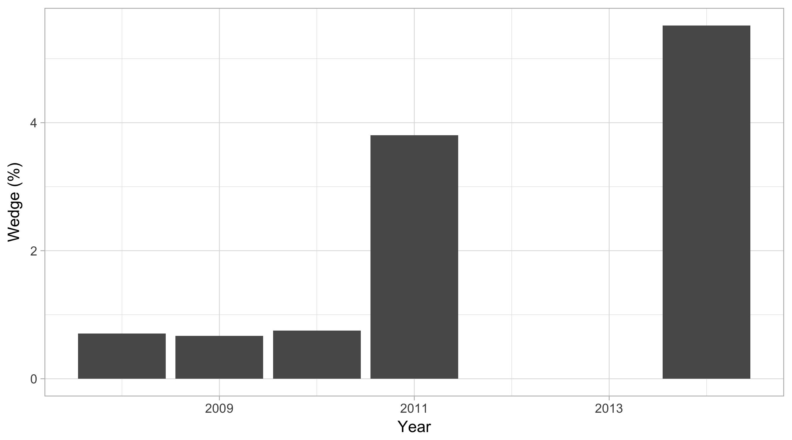 <div id="logo-footer-black"></div> --- ## Size of the Wedge: Simulation Can use our simulation model to compare optimal catch and effort-based policies 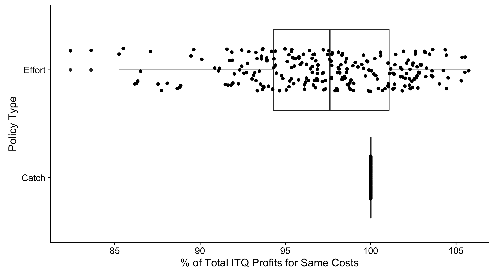 <div id="logo-footer-black"></div> --- class: dark, middle ### The "wedge" between catch and effort-based policy instruments is likely quite small for the WCPO tuna fishery --- class: dark, middle .pull-left[ # The End (?!) ] .pull-right[ 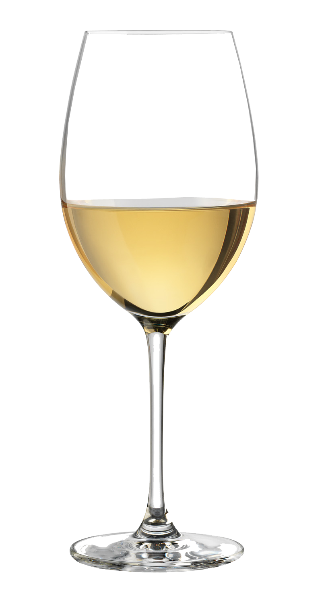 ] <div id="logo-footer-white"></div>